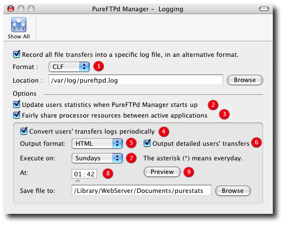

PureFTPd Manager - Logging

2. Ask PureFTPd Manage to automatically updates the user's statistics at startup. 3. Be nice to other running process and automatically reduce the update process priority if needed. It is generally a good idea to check this box. 4. Periodical log conversion Using another cool Unix tool called cron, you can setup a statistic conversion tool called purestats to convert users' statistics to more useful formats and save them somewhere on your hard drive. 5. Choose your format output: HTML or CSV. 6. Check this box if you want your stats to be as complete as possible. 7. Select on which days you want to export your statistics. Use * to export your stats everyday. 8. Set the time the conversion is performed. 9. Preview your conversion ! |